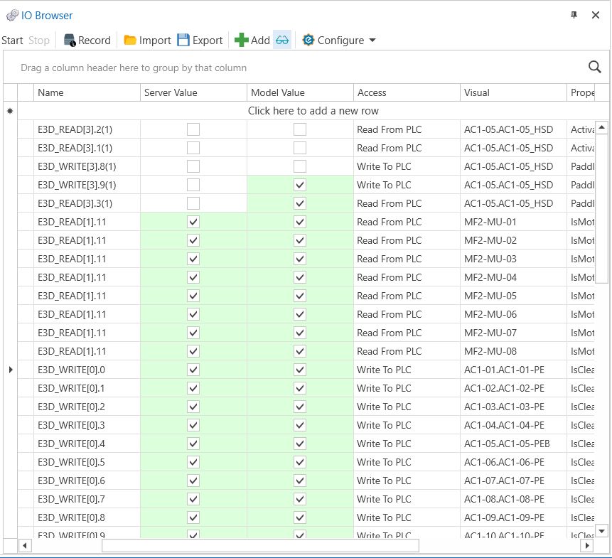
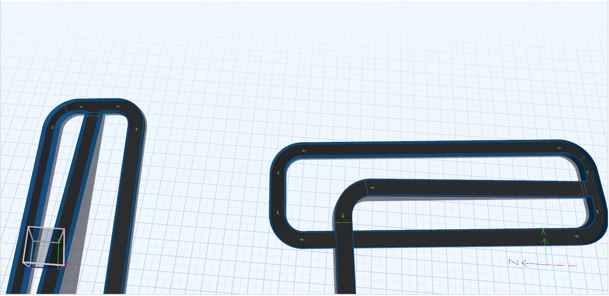
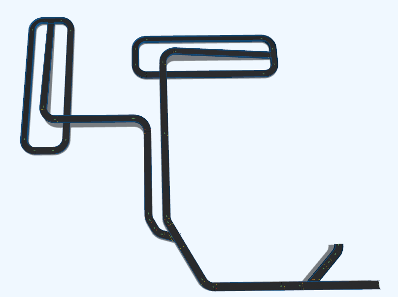
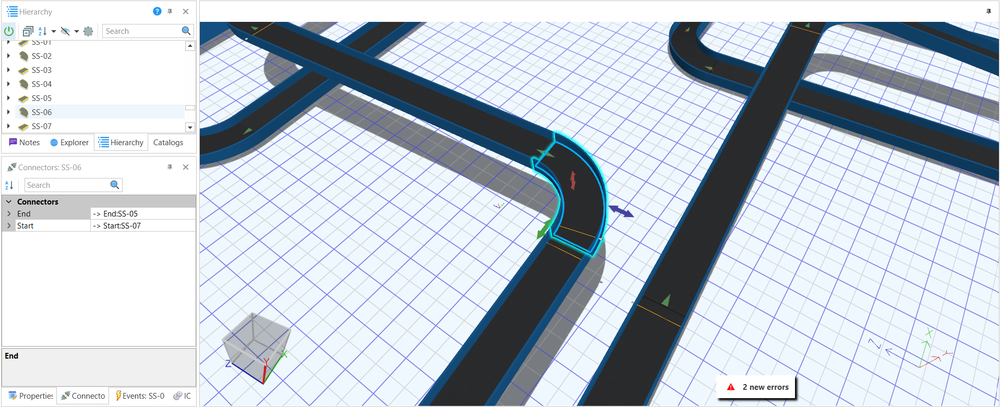
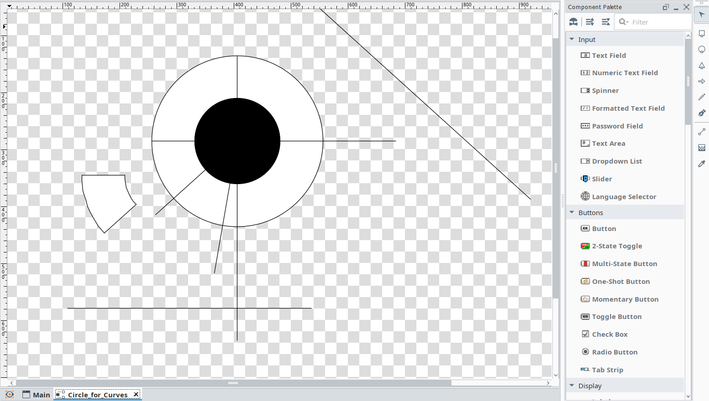
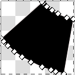
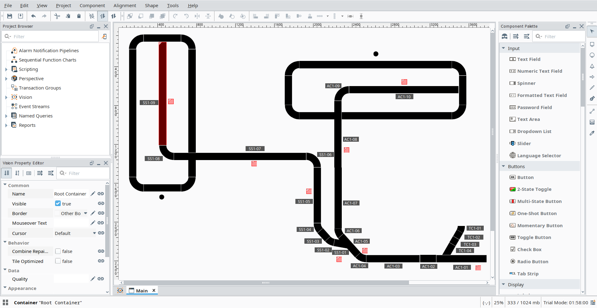
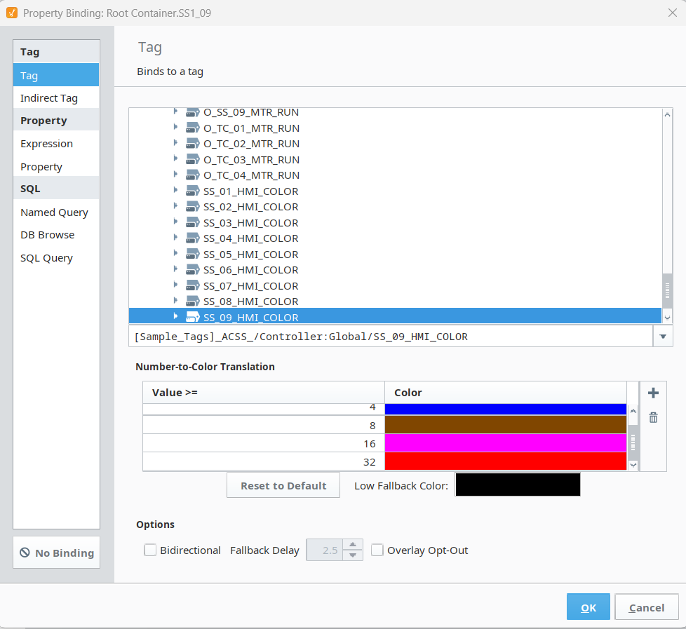
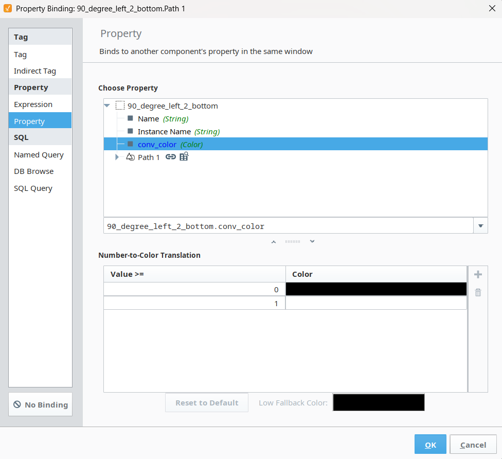

I/O Browser Mapping
Shows system tag and I/O mapping used to connect controls, sensors, and emulation components.
Official screenshot overview of the virtual conveyor capstone, including HMI monitoring, I/O connectivity, prototype development, and integration diagnostics.

Shows system tag and I/O mapping used to connect controls, sensors, and emulation components.

Highlights added photoeye and motor unit elements used to support conveyor logic and flow detection.

Presents the completed virtual conveyor prototype after configuration and end-to-end integration.

Captures communication and connection issues identified during testing and system synchronization.

Demonstrates how exact curve measurements were calculated by applying specific angles to the curve layout.

Screenshot after drawing the specified angle, showing the exact vertices needed to build the proper curve.

Presents the main operator interface with high-level system visibility and control points.

Demonstrates component bindings tied directly to runtime values and tag states.

Shows reusable template links used to keep interface behavior consistent across views.
Demonstrates a full bag pass-through cycle and conveyor response behavior.
Shows runtime behavior and visual state transitions from the E3D view.
Captures PLC-linked conveyor logic activity during system operation.